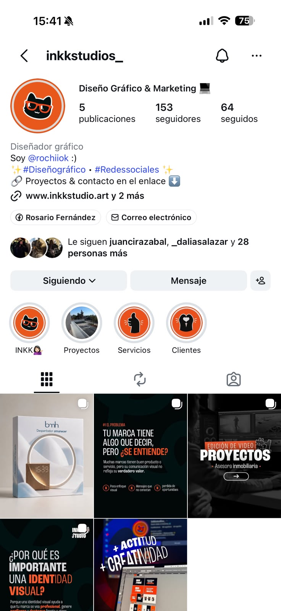
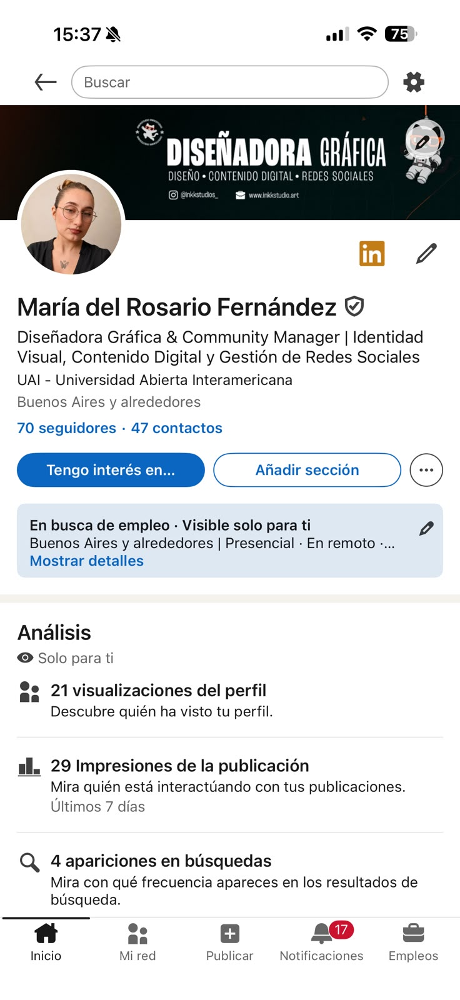

“Quiero recomendar a Rosario con total confianza. Llevamos más de tres años trabajando juntas, desde que aún estaba estudiando, y ha sido increíble ver su crecimiento profesional durante todo este tiempo.
Además de ser una persona muy responsable y comprometida, siempre aporta ideas creativas que marcan la diferencia. Gracias a su trabajo, la imagen de mi empresa ha evolucionado muchísimo y hoy proyecta un aspecto mucho más profesional, moderno y confiable.
Valoro enormemente su dedicación, su disposición para escuchar y transformar las ideas en diseños de gran calidad. Sin duda, ha sido una pieza clave en el crecimiento de mi negocio.
La recomiendo al 100 %. Si buscan una diseñadora gráfica talentosa, creativa y comprometida, Rosario es una excelente elección.”
PORTFOLIO CREATIVO
Ideas claras, piezas con carácter y sistemas visuales listos para vivir en cualquier formato.
DISEÑO PARA MARCAS QUE QUIEREN HACERSE VER.
Ver todo ↗creatividad + actitud = impacto
Soy un estudio de diseño y marketing: me encargo de cómo se ve tu marca y de que llegue a la gente correcta. Todo en un mismo lugar.
HOLA, SOY
ROSARIO.
Soy diseñadora gráfica y directora de arte. Trabajo entre estrategia, identidad y contenido para transformar ideas en sistemas visuales claros, actuales y con personalidad.
Colaboro con marcas, emprendimientos y equipos de Argentina y Latinoamérica. Me diferencia una mirada integral: puedo pensar el concepto, diseñar cada pieza y adaptar la comunicación a todos sus formatos sin perder coherencia.
- + Más de 3 años creando para marcas reales
- + Buenos Aires · proyectos para toda Latinoamérica
Buenos Aires, AR 🇦🇷

Diseño, fotografía, video y campañas conectados por una misma mirada visual.
Ideas claras. Diseño con carácter. Marcas que quedan.
Convertimos ideas en sistemas visuales que se ven, se entienden y se recuerdan.
 Diseño con intención
Diseño con intenciónpara marcas reales.
PROYECTOS
REALIZADOS.
Una selección de diseño, campañas, fotografía y contenido creados y entregados para marcas reales.
Portfolio completo ↗DISEÑO
Diseño de piezas gráficas, identidad y contenido visual para marcas, redes y web.
PACKAGING
Diseño de packaging y piezas impresas para que tu producto se vea claro, atractivo y listo para llegar a las manos correctas.
03
DISEÑO WEB
Sitios web diseñados y desarrollados a medida, con asistencia de IA para acelerar el armado y el mantenimiento.
⌄
DISEÑO WEB
Sitios web diseñados y desarrollados a medida, con asistencia de IA para acelerar el armado y el mantenimiento.
Web Shopify
nutritionglobal.online ↗ Tienda de suplementos deportivos: proteínas, creatina, vitaminas y accesorios de fitness. Con asistencia de Claude Code y ChatGPT tuplanfuturo.cl ↗ Asesoría en inversión inmobiliaria: propiedades donde el arriendo paga el crédito hipotecario. Con asistencia de Claude Code y ChatGPTEDICIÓN DE VIDEO
Reels, anuncios y contenido social con ritmo, corte y visuales pensadas para captar la atención y sostener el mensaje.
FOTOGRAFÍA
Fotografía real de producto y marca, con atención a la luz, el encuadre, los detalles y la identidad visual.
SEGUINOS Y
CONECTEMOS.
Contenido en movimiento y contacto directo, todo a un toque de distancia.


UNA MIRADA. MUCHOS LENGUAJES.
Concepto, diseño y ejecución conectados
en un mismo sistema visual.

DE LA IDEA A LA ENTREGA.
Un flujo simple para que cada proyecto avance con claridad, criterio y buen ritmo.
DESCUBRIR
Objetivos, audiencia, referencias y necesidades.
DISEÑAR
Concepto, dirección visual y primeras decisiones.
DESARROLLAR
Sistema, piezas, variantes y adaptaciones.
ENTREGAR
Archivos organizados y listos para usar.
LO QUE DICEN
LOS CLIENTES.

IDEAS, PROYECTOS
Y NUEVAS HISTORIAS.
Contame qué necesitás y armamos una propuesta.